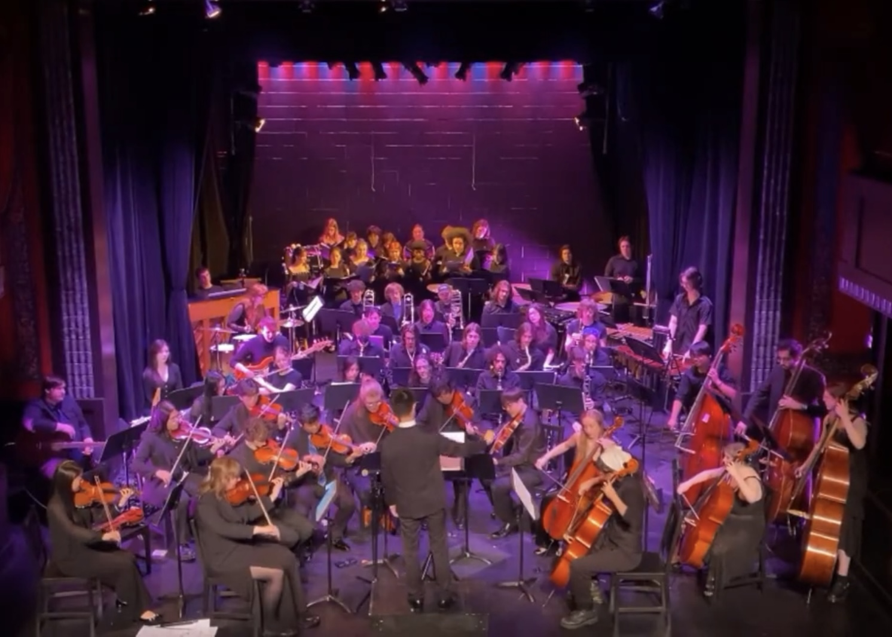
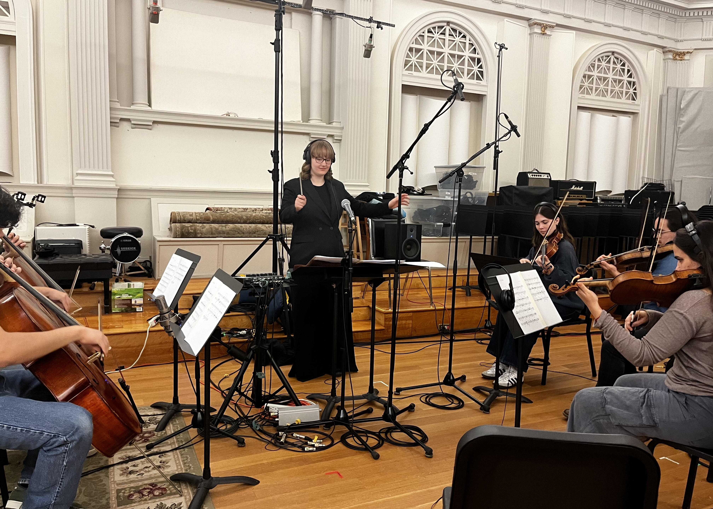
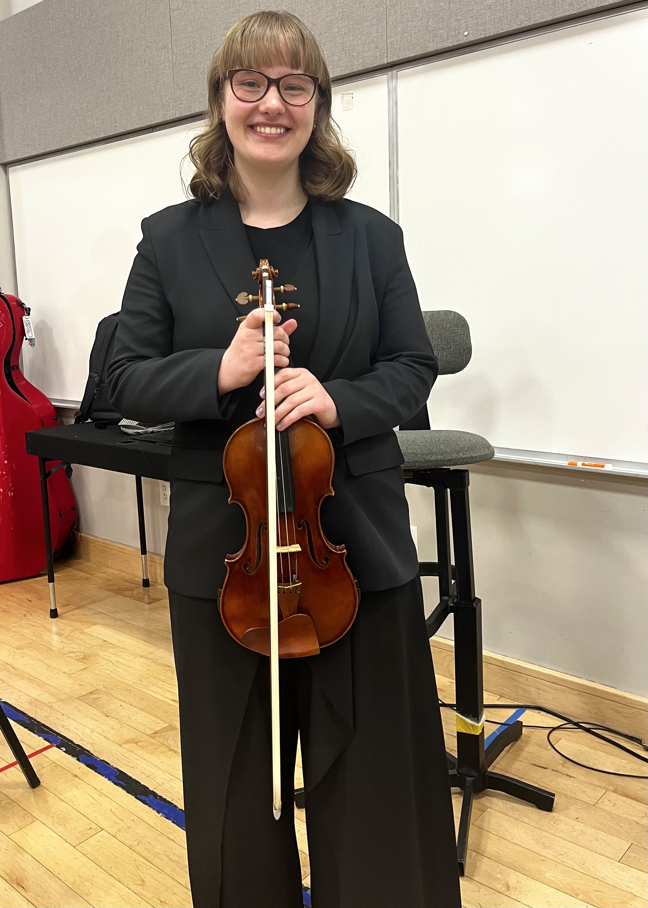
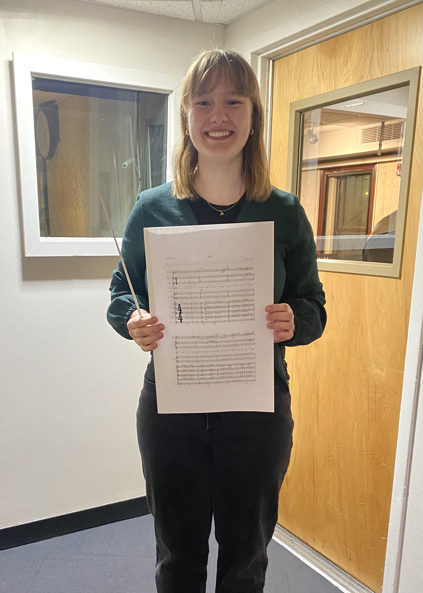
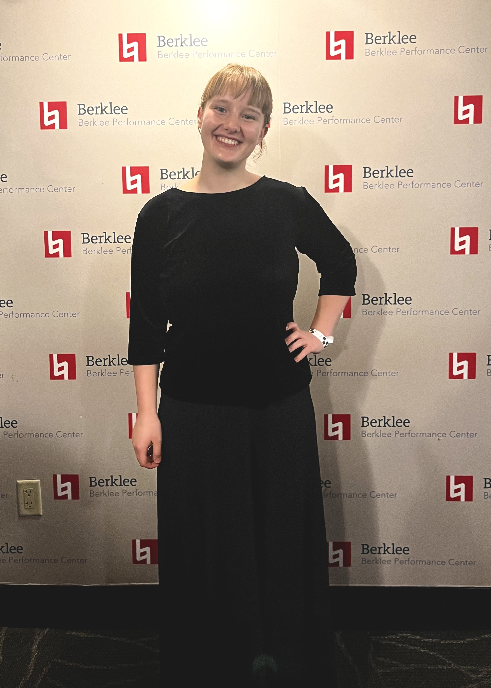
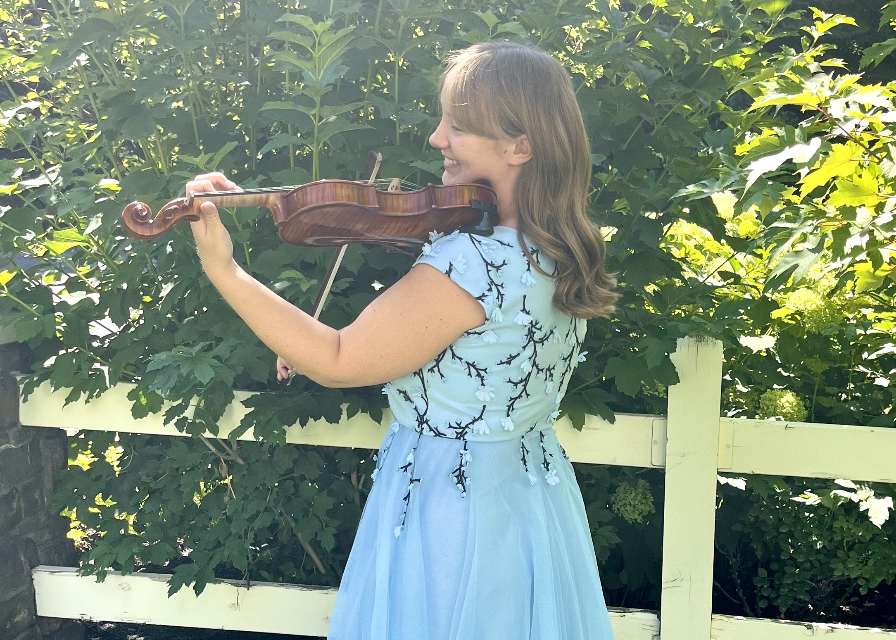
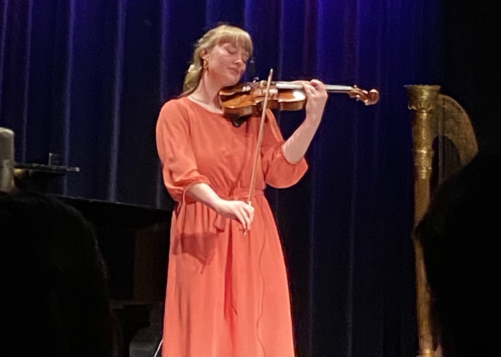
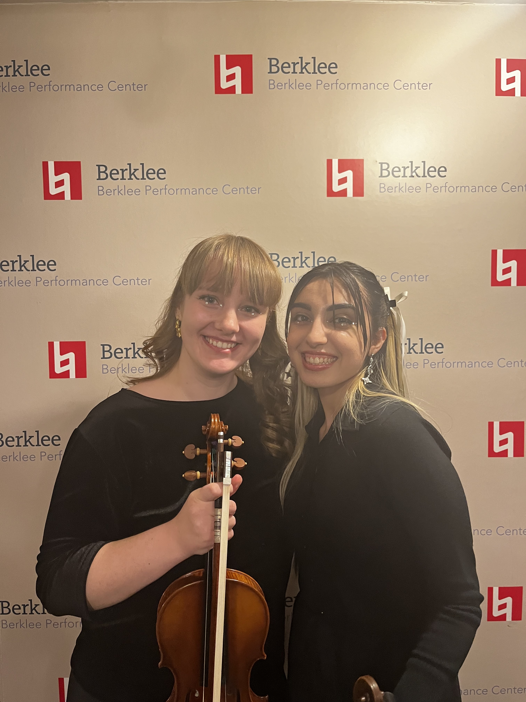

Claire Mayfield
Claire Mayfield is a composer & sound designer for video games, film, and TV in Boston, MA. She is currently studying at the Berklee College of Music with a full-tuition scholarship, double majoring in Game & Interactive Media Scoring and Film & Media Scoring and minoring in Conducting.
Claire loves to collaborate with other artists and developers, and has worked on numerous video games as a composer, sound designer, and audio director. In collboration with students from the University of Southern California and Berklee, she composed music for the video game Corporate Hell and was the sound designer for the game Lost in an Illusion. She has also worked on game jams with students from Northeastern University. In these game jams, she composed music and designed sound for the game Smashing Pumpkins 2, and composed music for the game Unmasced. Claire is currently the audio director for video game with students from USC and Berklee.
Throught her studies and experience working on projects, Claire has developed skills in music composition, sound design, dialogue, conducting, programming, and audio implementation for games. She has worked with Wwise, FMOD, and Unity.
In additon to media scoring, she also composes music for concerts with the Berklee World Strings and the Berklee Music Inclusion Ensemble.
Photos

Audire Concert, April 2025

Berklee Recording Session, April 2025

Berklee World Strings Concert, March 2025

Berklee Recording Session, February 2025

Berklee World Strings Concert, September 2024

Solo Recital, August 2024
Headshot, April 2024

Berklee String Department Recital, March 2024

Berklee World Strings Tour, February 2024
Senior Pictures, May 2023